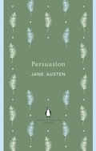

Home Page --> Shatter Me Tahereh Mafi 94 / 338  Persuasion Jane Austen 52 / 256 Mockingjay Suzanne Collins 16 / 390 The Wicked King Holly Black 253 / 328 Beautiful Creatures Kami Garcia & Margaret Stohl 275 / 670 The Catcher in the Rye J.D. Salinger 40 / 277
 Shatter Me
Shatter Me  Mockingjay
Mockingjay  The Wicked King
The Wicked King